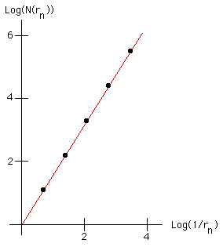

|
 |
| Plotting the points in the table below, we obtain the graph on the right. The points lie on a straight line of slope about 1.59. (The graph shows a greater range, and more widely spaced, points than these.) | |||||||||||||||||||||
| |||||||||||||||||||||
| So the box-counting dimension of the gasket is about 1.59. |
Return to Box-Counting Dimension of a Gasket.